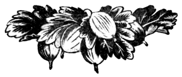

Крыжовник

Хозяйственное значение крыжовника
Крыжовник — одна из ценнейших ягодных культур. Ещё в XVI в. ягоды крыжовника были названы северным виноградом. Одним из важнейших свойств крыжовника является пригодность ягод в различной степени зрелости для переработки, а также для потребления в свежем виде. Незрелые, зелёные ягоды перерабатывают на компоты, полузрелые — на варенье, глазирование, сульфитацию; зрелые ягоды крыжовника — прекрасный десерт, отличающийся большим разнообразием вкуса и внешним видом.
Ни одна ягодная культура не имеет такого разнообразия окраски ягод, как крыжовник. Среди сортов крыжовника имеются сорта белой, светло-зелёной, зелёной, тёмно-зелёной, светло-красной, красной, тёмно-красной, вишнёво-красной и почти чёрной окраски.
По вкусовым качествам сорта крыжовника не менее разнообразны.
Зрелые ягоды крыжовника перерабатывают на вино, которое считается одним из лучших ягодных вин.
Крыжовник ежегодно даёт высокие урожаи, при сравнительно малой трудоёмкости культуры. Ягоды крыжовника отличаются высокой транспортабельностью.
Крыжовник рано вступает в пору плодоношения, начиная плодоносить на третий год по посадке и давать значительные урожаи на пятый год.
История культуры крыжовника
О введении крыжовника в культуру достоверных сведений не имеется.
В России крыжовник был известен значительно раньше, чем в Западной Европе и Америке. Уже в XI в. в садах, наряду с плодовыми деревьями, имелся крыжовник, который в то время носил название «крыж-берсень» или «крыг-берсень», а также «агрест» или «агрист». До XV в. сады были, в основном, при монастырях, а в XV в. при Иоанне III крыжовник был посажен около Москвы-реки, на месте, которое сейчас называется Берсеневской набережной.
В Европе долгие годы крыжовник ценился лишь как кустарник для ограды; как плодовое растение он приобрёл ценность значительно позднее.
В 1536 г. крыжовник был впервые описан в литературе. В этом описании крыжовник считается пригодным в незрелом состоянии, в основном, для соусов и супов, а в зрелом состоянии — для употребления в свежем виде, хотя «на богатых обедах им пренебрегают».
В России мелкоплодные сорта стали вытесняться крупноплодными сортами в XIX в., но сортимент лучших сортов в то время был сосредоточен, в основном, в помещичьих садах.
Культура крыжовника в СССР
Культура крыжовника широко распространена по всей территории СССР, но наибольших размеров она достигает в районах Москвы, Ленинграда и Горького.
Под Москвой культура крыжовника сосредоточена, в основном, в Ленинском районе в селениях: Чертаново, Зюзино, Котляково, Борисово, Ясенево и др.
Основными, наиболее распространёнными сортами являются:
- Английский жёлтый,
- Варшавский,
- Бразильский,
- Зелёный бутылочный,
- Английский зелёный,
- и ряд малоценных сортов:
- Виноградный,
- Ивановский,
- Медовый,
- Арабский.
Под Ленинградом промышленные насаждения крыжовника находятся около Слуцка в селениях: Покровское, Антропшино, Фёдоровское, где культивируются сорта:
- Красный шампанский,
- Финик,
- Авенариус
- и ряд малоценных сортов:
- Арабский,
- Номер четвёртый,
- Аглицкий.
В Горьковской области центром культуры крыжовника является село Варганы, Лысковского района. Основной культивируемый здесь сорт крыжовника — Финик, носящий название Финик зелёный. Кроме этого сорта, встречаются: Варшавский, под названием Финик белый, Зелёный бутылочный, под названием Финик бутылочный, а также Махровый, Промышленный зелёный и другие малоценные сорта крыжовника.
Высокая продуктивность, сравнительно невысокая трудоёмкость культуры, высокие питательные и лечебные свойства ягод, пригодных для использования как в зрелом, так и в недозрелом виде, делают крыжовник особенно ценной и перспективной из ягодных культур.
Систематика крыжовника
Крыжовник относится к семейству крыжовничных (Grossulariaceae), к роду крыжовник (Grossularia), в котором насчитывается около 50 видов, из них один европейский (Grossularia eclinata) с двумя разновидностями: a) Grossularia reclinata var. vulgare и б) Grossularia reclinata var. uva crispa; один алтайский (Grossularia acicularis) и остальные американские.
Кроме европейского и алтайского видов, из американских для селекции имеют значение 7 видов:
- крыжовник слабошиповатый (Gross. hirtella),
- крыжовник шиповниковидный (Gross. cynosbati),
- крыжовник миссурийский (Gross. missouriensis),
- крыжовник Дуглас (Gross. divaricata),
- крыжовник острошипный или боярышниколистный (Gross. exyacanthoides),
- крыжовник снежный (Gross. nivea),
- крыжовник Леба (Gross. Lobbii).
В зависимости от происхождения все сорта крыжовника делятся на европейские и американские.
Большинство европейских сортов крыжовника произошло от разновидности обыкновенной — Grossularia reclinata var. vulgare.
В происхождении американских сортов приняли участие:
- крыжовник слабошиповатый,
- крыжовник шиповниковидный,
- крыжовник миссурийский,
- крыжовник европейский, разновидность Gross. reclinata var. uva crispa.
Основное различие между большинством американских видов и европейским видом заключается в значительно большей силе роста кустов американских видов и их устойчивости против мучнистой росы (сферотеки) по сравнению с европейским видом, у которого кусты обычно небольших размеров и неустойчивы против сферотеки.
Крыжовник европейский (Grossularia reclinata)
Рис. 537. Европейский крыжовник.
- Куст средней высоты, побеги с 1–3-мя, реже с 4-мя раздельными шипами.
- Листья с 3–5 лопастями; лопасти по краям с туповатыми крупными зубчиками.
- Цветки пониклые, собраны в кисти по 1–3, с 2–3 прицветниками.
- Чашечка колокольчатая, чашелистики обратнояйцевидные, тупые, отогнутые.
- Лепестки мелкие, зеленоватые, белые или красноватые.
- Завязь опушённая или голая, часто железистая.
- Столбик двухраздельный, покрыт отстоящими волосками, короче тычинок.
- Плод округлой или продолговатой формы, зелёного, жёлтого и пурпурового цвета.
Разновидность обыкновенная (Gross. reclinata var. vulgare) отличается крупными, блестящими листьями и железистой, иногда голой завязью. Встречается в европейских странах.
Разновидность с опушёнными плодами (Gross. reclinata var. uva crispa) отличается более мелкими тусклыми листьями и опушённой завязью. Встречается в европейских странах, а также в северной части СССР. Эта разновидность более засухоустойчива, чем разновидность обыкновенная, и с поздним созреванием ягод.
Представляет интерес как исходный селекционный материал при выведении поздно созревающих сортов для южных районов.
Крыжовник алтайский (Gross, acicularis)
Рис. 538. Крыжовник алтайский.
1 — цветущая ветвь; 2 — удлинённый побег с 3-мя укороченными, несущими цветки и листья; 3 — цветок сбоку; 4 — цветок развёрнутый; 5 — ветвь с плодами
- Куст среднего размера, до 1 м высоты, с побегами, густо покрытыми тонкими, слабыми шипами.
- Листья мелкие, 3–5-лопастные; основание листьев прямое с выемкой.
- Кисти одноцветковые.
- Завязь голая.
- Чашелистики отогнутые, красноватые.
- Лепестки мелкие, белые, тычинки немного длиннее листьев.
- Ягоды мелкие, округлой формы, красноватые или зелёные.
Крыжовник слабошиповатый (Gross. hirtella)
Рис. 539. Слабошиповатый крыжовник.
- Куст средней высоты, до 1 м, побеги тонкие, почти лишённые шипов.
- Листья с 3–5 лопастями; основание клиновидной формы.
- Кисти 2–4-цветковые.
- Лепестки мелкие, белые или с красными жилками.
- Чашелистики зелёные или пурпуровые, длиннее цветоложа.
- Тычинки равны по длине чашелистикам или длиннее их.
- Завязь голая.
- Ягода круглая, пурпуровая или чёрная, неопушённая, реже железистая, съедобная.
Распространение: восточная и центральная часть Северной Америки.
Представляет интерес для селекционной работы, как устойчивый против сферотеки, почти бесшипный вид крыжовника.
От скрещивания этого вида с европейским произошло большинство распространённых в Америке сортов: Даунинг, Карри, Пурман, Перл, Смит и др.
Крыжовник шиповниковидный (Grossularia cynosbati)
Рис. 540. Крыжовник шиповниковидный.
1 — укороченный побег с соцветием и листьями; 2 — цветок сбоку; 3 — цветок развёрнутый; 4 — кисть с плодами; 5 — удлинённый побег в состоянии зимнего покоя
- Куст высокий, до 1,5 м, раскидистый; побеги в нижних междоузлиях с шипиками.
- Шипы в количестве 1–3, прямые или загнутые вниз, длинные.
- Листья 3–5-лопастные; основание листьев прямое или с выемкой.
- Лепестки цветка белые, мелкие.
- Чашелистики продолговатые, зелёные, короче цветоложа.
- Тычинки немного длиннее лепестков.
- Кисть 1–2-цветковая.
- Ягода круглая, красная, с толстыми шипиками, толстокожая, съедобная.
Распространение: восточная часть Северной Америки.
Сорт Американский горный является гибридом этого вида с европейским.
Крыжовник миссурийский (Grossularia missouriensis)
- Кусты высотой до 2 м. Некоторые побеги с густо расположенными шипиками.
- Шипы прямые, длинные.
- Листья 3–5-лопастные, с прямым или округло-клиновидным основанием.
- Лепестки втрое короче чашелистиков, белые.
- Чашелистики продолговатые, зеленовато-белые.
- Тычинки вдвое длиннее чашелистиков.
- Завязь голая.
- Цветочная кисть в 2–3 цветка.
- Ягода крупная, неопушённая, пурпуровая, мелкая.
Распространение: центральная часть Северной Америки.
Крыжовник Дуглас (Grossularia divaricata)
- Куст очень высокий, достигающий 3 м, с густой кроной и дуговидно свешивающимися побегами.
- Толстые длинные шипы в количестве 1–3.
- Кисть 2–4-цветковая.
- Лепестки вдвое короче чашелистиков, белые или пурпуровые.
- Чашелистики пурпуровые, иногда частично зелёные, длинные.
- Тычинки длиннее или равны чашелистикам.
- Ягода мелкая, тёмно-пурпуровая; неопушённая, невкусная.
Распространение: западная часть Северной Америки.
Крыжовник Красильный (Gross. succirubra) произошёл в результате случайного скрещивания крыжовника Дуглас с крыжовником снежным.
Крыжовник острошипный или боярышниколистный (Grossularia oxyacanthoides)
- Куст низкий, раскидистый, побеги густо покрыты шипиками и опушённые.
- Шипы трёхраздельные, прямые.
- Листья пятилопастные, широкие, с обеих сторон опушённые.
- Завязь голая.
- Чашелистики беловатые, слегка превышают цветоложе.
- Ягода округлая, неопушённая, пурпуровая, хорошего сладкого вкуса.
Распространение: Северная Америка.
Гибриды между этим видом и европейским практического значения не имеют.
Крыжовник снежный (Grossularia nivea)
Рис. 541. Крыжовник снежный.
1 — цветущая ветвь; 2 — укороченный побег с соцветиями и листьями; 3 — цветок сбоку; 4 — цветок развёрнутый; 5 — плод; 6 — удлинённый побег в состоянии зимнего покоя
- Куст высокий, до 3 м, сжатой формы; побеги толстые, голые или с редкими шипиками.
- Шипы недлинные, на старых побегах легко обламываются, 2–3-раздельные.
- Листья пятилопастные, тусклые, с обеих сторон с редким опушением и прямым основанием.
- Кисти трёхцветковые, реже двухцветковые.
- Чашелистики длинные.
- Лепестки в 4 раза короче чашелистиков, направлены наклонно к центру, прилегая друг к другу.
- Тычинки очень длинные, в 1,5 раза длиннее чашелистиков.
- Ягода округлая, неопушённая, мелкая, тёмно-красная, с налётом, невкусная.
Распространение: Северная Америка.
Как исходный материал, представляет интерес для селекции благодаря сжатой форме мощных по развитию кустов.
Крыжовник Леба (Grossularia Lobbii)
Распространён на западе Северной Америки. Представляет интерес для селекционной работы.
Биологические особенности крыжовника
- Крыжовник — кустарник средней величины.
- Стебли вырастают у основания куста из почек, расположенных на стебле.
- Корни крыжовника побегов не дают.
- Побеги сероватой окраски, в узлах расположены шипы.
- Шипы бывают простыми, т. е. одиночными, или двухраздельными, реже четырёхраздельными. В междоузлиях могут быть шипики, которые наиболее густо располагаются в нижних междоузлиях. У некоторых сортов они отсутствуют.
- Листья 3–5-лопастные, голые или опушённые, без прилистников.
- Плодовые почки смешанные.
- Цветки обоеполые, расположены по одному, по два или по три в кисти, на короткой оси. Цветки колокольчатой формы, с пятью чашелистиками зелёной или зелёно-красной окраски, с пятью лепестками зеленоватой, белой или красноватой окраски, ромбической или треугольной формы, с пятью тычинками.
- Пестик в верхней части двухраздельный.
- Завязь одногнёздная, вытянута в удлинённую плодоножку, голая или опушённая простыми или железистыми волосками.
- Плод — ложная ягода (так как в его образовании участвует цветоложе), округлая или продолговатая, жёлтая, зелёная, пурпуровая или чёрная, голая или опушённая простыми или железистыми волосками с большим количеством семян. Семена покрыты студенистой оболочкой.
Вегетация у крыжовника начинается раньше, чем у других ягодных культур. Раньше, чем другие культуры, и зацветает он. Период цветения от четырёх до десяти дней.
Крыжовник — самофертильное растение, но охотно посещается пчёлами, осами, шмелями и мухами, производящими перекрёстное опыление.
Плодоношение наступает через 1,5–2 месяца после цветения (для средней полосы европейской части Союза ССР); ягоды на кусте созревают почти одновременно.
Урожайность крыжовника при благоприятных условиях достигает 25 т с гектара. Плодоношение ежегодное. Умеренная температура лета и зимы — наиболее подходящие условия для роста и плодоношения крыжовника. На севере он страдает от зимних морозов, на юге — от жары.
Наиболее подходящие почвы для крыжовника — нормально влажные суглинистые почвы. Сильно пониженные места, с застоем почвенной воды, мало пригодны для культуры крыжовника, так как на таких местах, помимо вредного действия излишней влаги в почве, крыжовник может подвергаться весенним заморозкам, губительно действующим на цветки и завязь.
Вредители и болезни иногда в значительной степени снижают урожайность крыжовника.
Грибная болезнь сферотека (мучнистая роса) — наиболее опасное заболевание крыжовника. В настоящее время в связи с применением способов борьбы со сферотекой, а также подбором соответствующих сортов, эта болезнь уже не имеет того значения, которое она имела раньше.
Болезнь выражается в появлении белого мучнистого налёта на завязях, концах побегов и листьях. Болезнь обычно обнаруживается весной, вскоре после цветения, и может поражать кусты до поздней осени. Мучнистый налёт превращается вначале в белый, войлочный, а затем в бурый. Ягоды почти останавливаются в росте и опадают, побеги замедляют рост или прекращают его, оставаясь часто искривлёнными.
Наиболее опасные вредители крыжовника — огнёвка и пилильщик.
В период цветения крыжовника бабочка огнёвки откладывает яички в цветки. Личинки вгрызаются в завязи и там развиваются. Взрослые личинки могут повредить большое количество ягод, уничтожая таким образом значительную часть урожая или весь урожай. Личинка пилильщика, питаясь листьями крыжовника, наносит большой вред кустам, лишая их ассимиляционной поверхности. Такие кусты крыжовника дают пониженный урожай не только в год повреждения, но и на следующий год.
Применение соответствующих мер борьбы с грибными болезнями и вредителями крыжовника в значительной мере снижает потери урожая.
Сравнительная характеристика сортов крыжовника по важнейшим агробиологическим признакам
Время цветения и созревания
Все известные сорта крыжовника зацветают обычно почти одновременно. В годы с особо низкой температурой в период цветения сорта крыжовника зацветают с промежутком в 8–10 дней. В такие годы наиболее рано зацветают сорта: Английский зелёный, Ранний Генингса, Зелёный ранний, Авенариус, Триумфальный, Белый триумф; наиболее поздно: Хаутон, Карри, Пятилетка, Мысовский 37, Мысовский 17, Кроун-Боб, Лимонный исполинский, Красный шампанский.
Продолжительность цветения одного сорта обычно от четырёх до десяти дней для Московской области, не более двух недель для Ленинграда и от трёх до девяти дней для Воронежской области.
По созреванию между ранними и поздними сортами наблюдается большая разница в днях, доходящая в отдельные годы до одного месяца в Московской области (между сортами Английский зелёный и Финик). В Ленинградской области разница между созреванием урожая ранних и поздних сортов доходит до шести недель (между сортами Ранний Генингса и Уаррингтон).
По времени созревания сорта крыжовника можно разделить на 5 групп:
- ранние,
- среднеранние,
- средние,
- среднепоздние,
- поздние.
Ранние:
Среднеранние:
Средние:
- Английский жёлтый,
- Бразильский,
- Зелёный бутылочный,
- Авенариус,
- Белый триумф,
- Тёмно-красный овальный,
- Чёрный негус,
- Шанон,
- Красный крупный,
- Ивановский,
- Виноградный.
Среднепоздние:
Поздние:
У большинства сортов крыжовника созревшие ягоды могут долго держаться на кусте, не изменяя вкуса и не осыпаясь, но у некоторых сортов ягоды от долгого сохранения на кустах портятся или осыпаются. К таким сортам можно отнести Английский зелёный, Бочёночный, Зелёный бутылочный, Шанон.
В целях предотвращения осыпания ягод и ухудшения вкуса их, сбор ягод необходимо производить немедленно по созревании или в технической зрелости (сорта Бочёночный, Зелёный бутылочный, Шанон).
Урожайность
По высокой ежегодной урожайности крыжовник среди ягодных культур занимает первое место.
Урожайность отдельных сортов достигает очень высоких размеров. Так, урожай с одного куста сорта Финик в селении Варганы, Лысковского района, Горьковской области, составляет 25 кг в возрасте 10 лет и 32 кг — в возрасте 15–20 лет.
По данным Московской плодово-ягодной опытной станции:
- сорт Английский жёлтый с отдельных кустов даёт урожай до 22 кг;
- Белый триумф, Венера, Индустрия — до 20 кг с куста;
- Бразильский — до 18 кг и т. д.
Большинство сортов крыжовника начинает плодоносить на второй год и уже на 4–5-й год давать значительные урожаи.
По урожайности сорта крыжовника можно разбить на группы:
- очень урожайные,
- урожайные,
- среднеурожайные,
- малоурожайные.
Очень урожайные:
- Английский жёлтый,
- Белый триумф,
- Венера,
- Индустрия,
- Ивановский,
- Финик,
- Бочёночный,
- Триумфальный,
- Бразильский,
- Карри,
- Хаутон,
- Виноградный,
- Мысовский 17,
- Мысовский 37,
- Пятилетка и др.
Урожайные:
- Лимонный исполинский,
- Зелёный ранний,
- Кроун-Боб,
- Зелёный бутылочный,
- Авенариус,
- Варшавский,
- Красный крупный,
- Красный шампанский,
- Тёмно-красный овальный,
- Сеянец Э. Лефор,
- Пурман,
- Лансер,
- Ранний Генингса,
- Майский герцог.
Качество ягод
По среднему весу одной ягоды сорта крыжовника делятся на:
- крупные,
- средние,
- мелкие.
К сортам с крупными ягодами относятся:
- Финик,
- Бочёночный,
- Лансер,
- Варшавский,
- Зелёный бутылочный,
- Бразильский,
- Индустрия,
- Шанон,
- Белый триумф,
- Кроун-Боб,
- Майский герцог,
- Лимонный исполинский.
К сортам со средней ягодой относятся:
- Авенариус,
- Английский жёлтый,
- Английский зелёный,
- Венера,
- Зелёный ранний,
- Ивановский,
- Красный крупный,
- Мысовский 17,
- Мысовский 37,
- Пятилетка,
- Ранний Генингса,
- Сеянец Э. Лефор,
- Тёмно-красный овальный,
- Триумфальный,
- Шампанский красный,
- Чёрный негус.
К сортам с мелкой ягодой относятся:
По вкусовым качествам ягод сорта крыжовника делятся на:
- десертные,
- столовые,
- технические.
Десертные сорта:
- Английский зелёный,
- Английский жёлтый,
- Авенариус,
- Сеянец Э. Лефор,
- Венера,
- Ранний Генингса,
- Шампанский красный,
- Бразильский,
- Кроун-Боб,
- Тёмно-красный овальный,
- Лансер,
- Зелёный ранний,
- Белый триумф,
- Майский герцог,
- Виноградный,
- Пурман.
Столовые сорта:
Технические сорта:
Многие сорта, вошедшие в группу десертных и столовых, также пригодны для использования их на переработку. Сорта, относящиеся к группе технических, можно потреблять и в свежем виде.
Устойчивость против болезней и вредителей
Большое значение в культуре крыжовника имеет устойчивость сортов против сферотеки. Не все сорта одинаково поражаются этой болезнью. Есть сорта относительно или абсолютно устойчивые, слабо, средне и сильно поражаемые.
Устойчивые сорта:
Относительно устойчивые:
Слабо и средне поражаемые:
- Авенариус,
- Английский жёлтый,
- Английский зелёный,
- Бразильский,
- Венера,
- Майский герцог,
- Лимонный исполинский,
- Финик,
- Красный крупный,
- Тёмно-красный овальный,
- Лансер,
- Ранний Генингса,
- Зелёный ранний,
- Шанон,
- Шампанский красный,
- Зелёный бутылочный.
Сильно поражаемые:
Наиболее опасный вредитель крыжовника — огнёвка, повреждающая все сорта.
Различие сортов крыжовника по морфологическим и хозяйственным признакам
Сорта крыжовника различаются по морфологическим и хозяйственным признакам.
Куст
Куст различается по силе и характеру роста, по длине и характеру побегов и шипов.
По силе роста бывают:
- сильнорослые,
- среднерослые,
- слаборослые кусты.
По характеру роста различают кусты:
- сжатые,
- раскидистые.
Степень раскидистости различна по сортам.
Побеги характеризуются:
- по толщине (тонкие, средние, толстые),
- по опушению (опушённые или голые),
- по направлению (прямые, изогнутые, со свешивающейся верхушкой),
- по окраске верхней части в период роста (зелёные или буро-красные),
- по силе вооружённости шипами (шипы до верхушки побега, шипы отсутствуют в верхней части побега),
- по наличию или отсутствию шипиков в междоузлиях.
Шипы бывают одиночные, 2–3–4-раздельные. Одни сорта имеют один резко выраженный вид шипов, другие — несколько видов.
- По длине шипы бывают длинные, короткие.
- По толщине — толстые, тонкие, средние.
- По силе — сильные, слабые.
- По направлению шипы расположены перпендикулярно к побегу, наклонно вниз или вверх.
- По окраске шипы бывают более светло- или более тёмно-окрашенными.
Листья
Листья вегетативных и плодоносящих побегов не однородны. При описании необходимо указывать, какие листья приняты во внимание. При определении сорта важны признаки листа тех и других побегов, но основное значение при описании сорта имеют листья вегетативных побегов, которые имеют наиболее резкие отличительные признаки.
Листья различаются по размеру, окраске, характеру поверхности, характеру зубчиков, основанию листа, характеру лопастей. Листья бывают крупные, средние или мелкие. Окраска — тёмно-зелёная, зелёная, светло-зелёная.
Поверхность — голая или опушённая, блестящая или тусклая, кожистая или мягкая, морщинистая или гладкая, прямая, выпуклая или вогнутая; зубчики бывают тупые или острые, короткие, длинные, подогнутые или неподогнутые.
Основание листа может быть прямое, выпуклое или с выемкой (мелкой или глубокой).
Лопастей три или пять, с глубокими или мелкими вырезами; верхушка лопастей тупая или острая.
Цветки
Кисти крыжовника бывают одноцветковые, двухцветковые и редко трёхцветковые. Цветки отличаются размером, окраской; размером, формой и окраской чашелистиков, лепестков и завязи; опушённостью, соотношением длины тычинок, пестика и лепестков.
Размер цветка бывает крупный, средний или мелкий. Окраска чашелистиков может быть бледная или яркая; по размеру они бывают длинные, короткие, широкие, узкие; опушение наружной стороны чашелистиков (стороны, обращённой в период цветения к чашечной трубке) бывает сильное, среднее или слабое; у ряда сортов чашелистики голые. У одних сортов чашелистики во время цветения отогнуты кверху, у других — в горизонтальном положении. При отцветании чашелистики у одних сортов опущены вниз (закрытая чашечка), у других полуопущены (чашечка полуоткрытая). У ряда сортов чашелистики отогнуты горизонтально (чашечка открытая) или остаются поднятыми кверху. Иногда у одного и того же сорта можно встретить опущенные, полуопущенные и горизонтально отогнутые чашелистики.
Форма лепестков бывает ромбическая или полукруглая; окраска белая, розоватая, желтовато или зеленовато-белая. По размеру лепестки могут быть длинные или короткие; голые или опушённые.
Завязь бывает голая или в различной степени опушённая простыми или железистыми волосками (от слабого, едва заметного, до сильного, почти войлочного). Форма завязи — коническая, овальная, округлая, с гранями или без граней.
По соотношению длины тычинок и пестика сорта делятся на 3 группы:
- тычинки на уровне с пестиком,
- тычинки выше пестика,
- тычинки ниже пестика.
Кроме соотношения длины тычинок и пестика, характерной является относительная длина тычинок и лепестков. У американских сортов тычинки в 2 раза превышают лепестки; у большинства европейских сортов тычинки лишь немного выше лепестков.
Ягоды
В определении сорта ягоды крыжовника имеют большое значение, так как они обладают рядом резких отличительных признаков. Ягоды различаются по размеру, форме, окраске и другим признакам.
Размер ягод бывает крупный, средний, мелкий; крупные ягоды достигают 20 г веса и больше; мелкие ягоды сорта Хаутон весят 1–1,5 г.
По форме ягоды бывают:
- округлые,
- округлоовальные,
- овальные,
- яйцевидные,
- грушевидные.
Окраска ягод сортов крыжовника очень разнообразна: она может быть почти белая, зелёная, жёлтая, розовая, красная, тёмно-красная, почти чёрная.
Кроме этих основных признаков, большое значение имеют и другие отличительные признаки: характер опушения, жилкование, величина и число дыхательных пятен, длина и окраска плодоножки, тип чашечки.
Опушение бывает простое или железистое. Степень опушения зависит от сорта.
Жилкование различается по окраске жилок и характеру разветвления. Дыхательные пятна расположены по жилкам; они крупные или мелкие, многочисленные или редкие. Длина плодоножки принимается относительно длины оси. Окраска плодоножки бывает зелёная или тёмно-зелёная, а также буро-зелёная. Чашечка бывает открытая, полуоткрытая, закрытая, полная или неполная.
Помимо описанных морфологических признаков, ягоды крыжовника различаются по вкусу. По вкусу ягоды делят на сладкие, кисло-сладкие, с ароматом и без аромата.